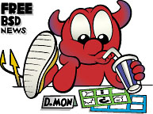

Новости FreeBSD
Местные новости
Последние новости FreeBSD: Новые релизы, драйверы, коммиттеры, объявления, касающиеся безопасности и другие новости.
Пресс-релизы: Пресс-релизы проекта FreeBSD и других организаций.
Статьи в прессе: Упоминания FreeBSD в периодических изданиях.
Отчёт о Статусах: Отчет о статусе разработки FreeBSD (выпускается раз в два месяца).
Другие сайты
Раздел BSD на сайте Slashdot: Ссылки и обсуждение новостей BSD, и не только FreeBSD.
BSDnews: Онлайн журнал, специализирующийся на BSD.
Daemon News: Ежемесячные статьи и ежедневные обсуждения всего, что касается BSD.
Really-Quick(tm) NewsLetter: На тот случай, если у вас нет времени.
FreeBSD Diary: Записи одного человека о своих попытках и достижениях с FreeBSD.
BSD DevCenter: Единый портал ONLamp.com/O'Reilly Network для размещения публикаций о BSD, новостей, пособий или информации общего характера.
BSD Vault: Веб-портал, поддерживаемый пользователями, который предназначен для распространения операционных систем семейства BSD.
BSD Freak: Сайт, предназначенный для предоставления статей, связанных с BSD и пособий, написанных с точки зрения пользователя.
Kerneltrap: Ежедневные статьи и последние новости о ядрах FreeBSD и Linux.
OSNews: Ежедневные статьи и последние новости о Linux, BSD и других операционных системах.